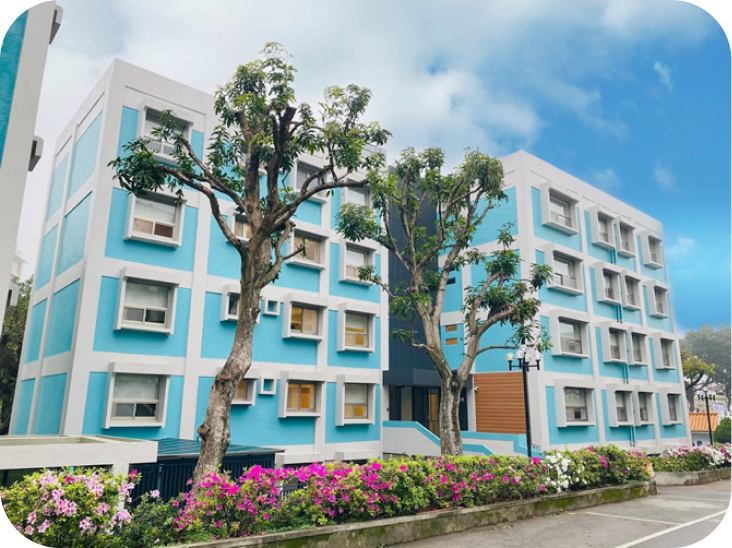

Sung-Tao Hall 4 and 5 are on-campus dormitories for female students only
Sung-Tao Hall 4 and 5 are newly built suites for female students that can house up to ten students. Hall 4 has four floors while Hall 5 has five floors (no elevator included), with roofs made of fireproof building materials. Every room has temperature detectors and fire alarms that are examined every half year, and fire drills are held every September.
- Entrance control: 24-hour card system (student ID) for entrance alongside face recognition systems to prevent students from being followed. Entering and leaving the dorm at night is recorded and periodically updated on the Student Housing Guidance Section website for students and parents to monitor. Cameras are installed near the entrance, and security guards are stationed to ensure student safety.
- Hardware supplied: Each suite includes sofas, dining tables, microwaves, hot plates, and fridges. Each suite in Hall 4 also includes washing machines, dryers, dehydrators, and space to hang clothes to dry. Each room is equipped with beds (no mattress included), desks, chairs, desk lights, closets, sheer shades, Wi-Fi, phones, air conditioners, and bathrooms. To enhance living standards, air conditioners use top-up air conditioning cards. Public areas include multi-use areas (coffee bar counter, study rooms, and learning areas), smart vending areas, administration offices, reading lounges, small dancing rooms, self-service washing areas (with washing machines, dryers, and dehydrators activated by coins), and a patio. Each suite has its own mailbox, and a path connects the two halls together.
- Leisure activities: A dormitory student committee is established, made up of enthusiastic students who organize special events such as the “All Pass” event, Christmas parties, and other activities.
- Guidance and Counseling section: One counselor is assigned to assist students with daily needs and other administrative matters. Additional counselors are available at night and on weekends to handle sudden incidents, ensuring students' safety and providing peace of mind for family members.
- Life functions: Sung-Tao Hall 2 has smart vending machines, along with a cafeteria downstairs. There is also a bookstore and post office on campus, as well as bus stops that connect to the Tamsui MRT and Danhai LRT stations.